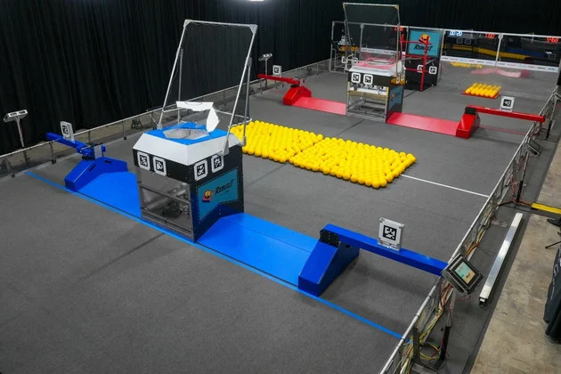
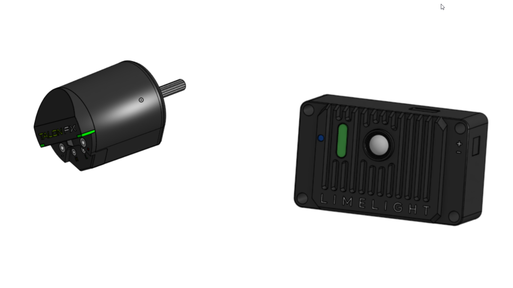
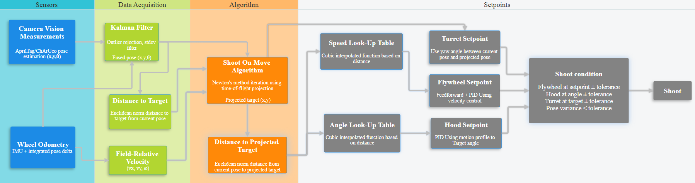
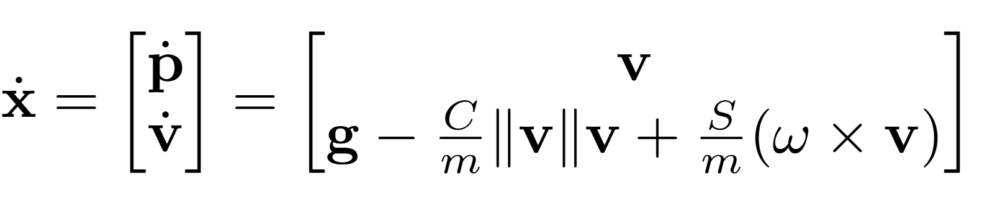
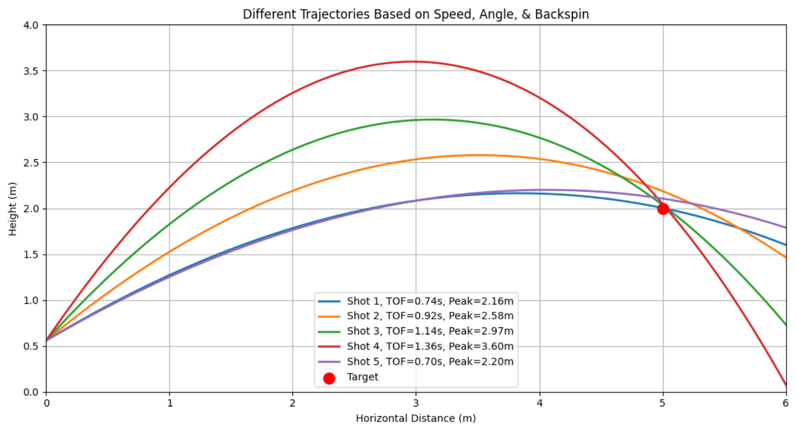
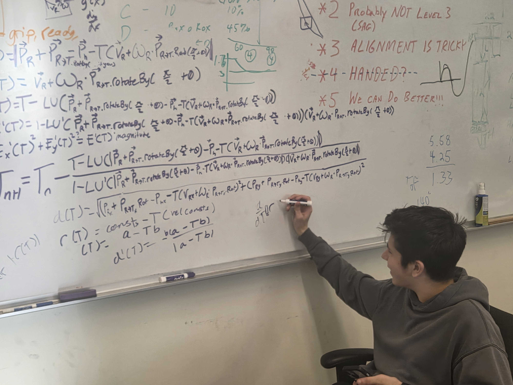

This project details the implementation of a "shoot-on-the-move" algorithm for the 2026 FIRST Robotics game: Rebuilt. "TrajectorySolver" is the name of the algorithm and our codebase that enables the robot to calculate the necessary targets for shooting while in motion.
The Problem
In the game, a robot's objective is to shoot yellow balls known as "fuel" into the "hub" located on their respective sides of the field. To maximize throughput, the robot needed to fire projectiles accurately while translating across the field and collecting additional game pieces simultaneously. Our goal was to be able to accurately shoot and score regardless of robot motion.

Mechanical + Electrical Design
The overall robot design was extremely influential in the versatility needed to shoot on the move
Mechanical Systems
Chassis design - Swerve drive system with 4 drive and 4 steer motors
270-degree turret powered by Falcon 500 motor
Hood with 14-35 degree angle range
Dual-motor powered flywheel with 100 RPS freespeed
Electrical Systems
Robo-RIO 2 handling all processing
12v DC Lead-Acid battery
CTRE Kraken motors with integrated encoders over CAN bus
Limelight 4s handling vision measurements

Algorithm Walkthrough
01
Sensors & Data Acquisition
Shooting at different distances requires knowing where we are on the field, so we use a fused pose combining wheel odometry + vision measurements.
Wheel Odometry
The robot's swerve-based drive system uses magnetic encoders that measure both wheel rotation and direction. By tracking and integrating the change in encoder values over time, we can determine the robot's position and rotation using forward kinematics. This forms the system model of the Kalman filter. Motor encoders also provide robot-relative velocity in the x and y directions, as well as angular velocity measurements needed for the algorithm.
However, wheel odometry alone slowly drifts over time due to wheel slip, impacts, and encoder noise. For this reason, it is combined with vision measurements to provide a more accurate and reliable estimate of the robot's state.
Vision Measurements
AprilTags on the field are used for state estimation through Limelight 4s, an integrated camera on a Raspberry-Pi providing field relative pose estimates. This provides the measurement model in the Kalman filter.
Kalman Filter
Both measurements are combined in a latency-adjusted Kalman Filter. Filtering is done on all pose estimates, including adjusting standard deviation numbers based on distance and tag count, as well as rejecting any outliers.
Pose Estimation Example
Red - Fused robot pose Green - Accepted vision measurement Orange - Rejected pose (Standard Deviation too high, Outlier, etc.)
02
The Algorithm
The central challenge with shooting on the move is that the ball has extra displacement inherited from the robot's multi-axis motion.
Key Insight
A stationary robot can shoot using a static lookup table indexed only by distance.
However, once the robot begins translating across the field, the problem becomes significantly harder.
The projectile remains in the air for a nonzero amount of time, while simultaneously the robot continues moving after the shot is fired.
This creates a recursive dependency:
The distance from the robot to the target, given the flywheel speed and angle, determines the projectile flight time, but this time also determines
how far the robot moves before the ball reaches the goal.
To solve this, the algorithm predicts the future target position by projecting robot velocity forward in time
and iteratively solving for a time-of-flight using Newton's Method.
E(t) = t - tof(d(t))
The solver converges in only a few iterations and allows the robot to dynamically compensate for motion while shooting at full speed.
Flowchart:

Newton's Method & Uncertainty Propagation - Derivation found here
Newton's Method requires an accurate estimate of distance to the target, but the fused robot pose produced by the Kalman filter inherently contains uncertainty from wheel slip, encoder noise, latency, and imperfect vision measurements.
That uncertainty propagates directly into the projected target distance and therefore affects the probability of successfully scoring the shot.
To account for this, the algorithm propagates the covariance matrix of the fused robot pose through the projected distance function using first-order linearization.
The result is a probability distribution of possible distances, and shot probabilities are calculated as:
p(hit) < p_min
If the calculated probability of landing within an acceptable tolerance falls below a minimum threshold, the shot is rejected.
This prevents firing during periods of poor localization quality, unstable tracking, or excessive robot motion.
Overall, the projected targeting updates executed within the 50Hz robot control loop, and empirical testing demonstrated:
Stable Newton convergence across all legal shooting distances
Accurate shots while translating at constant velocity
Reliable shot rejection during poor localization conditions
Real-time execution within strict control-loop timing constraints
Demo Below ↓ - Projected Targeting resulting in scoring
Red - Fused robot pose Green - Projected target
Demo Videos
Autonomous
↑ Video of TrajectorySolver succeeding while the robot is in autonomous mode.
Practice
Simulation
To help test our algorithm, a rigid body dynamics simulation was created of ball trajectories so prototyping and debugging can develop even without the robot. This allows for development while the mechanical
components are still being built to meet stringent deadlines.
Simulation Environment
The projectile simulation served as a critical validation tool to model realistic conditions and verify that the lookup tables produced physically consistent results, in addition to analyzing how different shots behaved.
I implemented a custom rigid body dynamics simulation in Java to model projectile flight under realistic conditions. The simulation incorporated gravity, aerodynamic drag, and backspin effects resulting in the derivation of the equations of motion. I then numerically integrated these equations forward in time using the Runge-Kutta method. The result is a list of 3D points (x, y, z), each with a timestamp that describes the trajectory of the ball. My simulation was used to model ball trajectories so we can pick out the shot type that would work best: high-arc or low-arc, and fast or slow shots. Derivation
can be found here
State space dynamics ↓


Development Timeline
Phase 1 — Modeling & Simulation — Jan 2026 - Feb 2026
Initial research and planning of shoot-on-the-move methods - This phase focused on time-of-flight estimation by deriving the mathematical models and defining any system constraints.
This also marked the development and completion of the shot simulation to validate the algorithm and analyze trajectory behavior under different launch conditions.

Phase 2 — Integration — Feb 2026 - Mar 2026
First implementation of the initial shoot-on-the-move codebase with the practice robot. This involved adapting the velocity projection in simulation to mechanical subsystems, while collecting telemetry and replay logs for analysis. Below was one of our very first test runs ↓
Phase 3 — Optimization — Mar 2026 - Apr 2026
Refined lookup tables and adjusted lag-compensation based on log data and replay videos. Found the absolute limits of the lookup tables and added safeguards for Newton convergence when these limits are reached. Added acceleration limits to the drive to handle aggressive robot motion.
Phase 4 — Deployment — Apr 2026 - May 2026
Deployed the finalized targeting system during competition play. Long-term monitoring yielded stable real-time performance and accuracy under match conditions.
Results + Reflection
Performance
Speed - Can shoot at all possible robot velocities
Over 85% accurate
Other teams have taken inspiration from our code
Our algorithm won Innovation in Control award at one of our competitions
Future Improvements
Use low-pass filters on projected distance to remove jittery movement
Tune acceleration limits better to improve accuracy
Add confidence tracking - Don't shoot if lost tracking or variance is too high for N consecutive frames
Final Reflection
This project was one of the most in-depth and rewarding projects we have ever completed. It has given me invaluable experience in the implementation and testing of algorithms from formulas on pen and paper to actual results. Overall, this project demonstrated how simulation, data-driven tuning, and real-time estimation can be unified to produce a robust competitive system that performs reliably under field conditions.